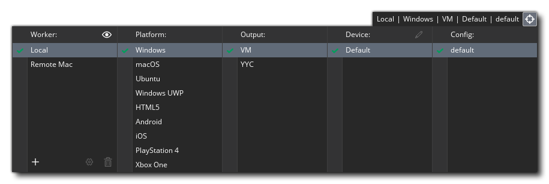
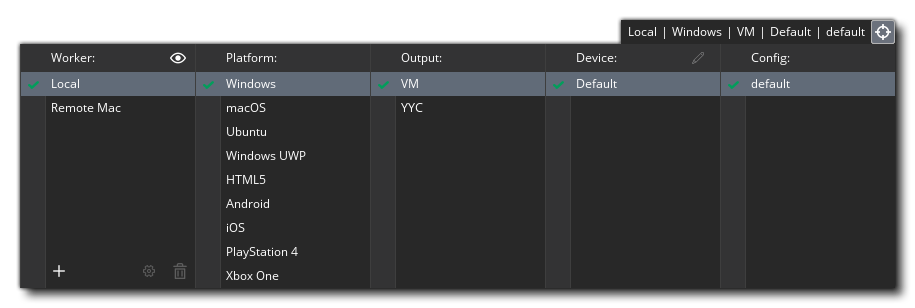
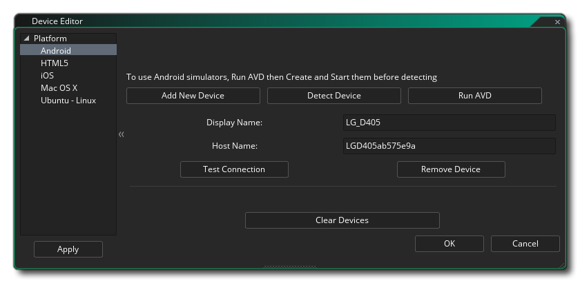
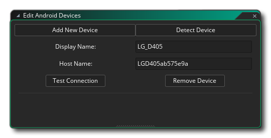

编译游戏意味着以下两种情况之一：编译它进行测试，或编译它以创建特定目标平台的 资源包 。只需按下IDE顶部的播放按钮  即可完成游戏测试，该按钮将使用指定的目标平台启动游戏来进行测试。 你也可以通过使用 调试模式 按钮进行测试来运行游戏
即可完成游戏测试，该按钮将使用指定的目标平台启动游戏来进行测试。 你也可以通过使用 调试模式 按钮进行测试来运行游戏  。这将会运行游戏，并打开 调试窗口，你可以在其中监视游戏的运行情况和调试其中的问题（有关详细信息，请参阅 调试 部分）。
。这将会运行游戏，并打开 调试窗口，你可以在其中监视游戏的运行情况和调试其中的问题（有关详细信息，请参阅 调试 部分）。
默认情况下，GameMaker Studio 2 使用内置的 VM（虚拟机）运行和调试，这与你正在使用的桌面操作系统上运行的程序大致相同。 然而，GameMaker Studio 2 是一个 跨平台引擎，你可以在许多不同的目标平台上测试，调试和编译项目的资源包（可用的确切目标平台将取决于许可证的详细信息）。 要更改当前的目标平台，你可以点击 目标平台 按钮  打开 目标窗口，如下所示（具体细节根据你的许可证类型而会有所不同）：
打开 目标窗口，如下所示（具体细节根据你的许可证类型而会有所不同）：
在顶部的“目标”按钮旁边，会显示当前的设置，它会告诉你当前平台和使用的具体设置，窗口的其余部分是其他可使用平台的详细信息和选项。此窗口的各部分详细解释如下：
目标管理器的第一列用于显示你可用的远程工作者。首先，你只能在此列出一个单独的“本地”机器，这是安装了 GameMaker Studio 2 的机器，但你也可以配置远程工作人员来使用。 当配置了远程工作机器后，你将能够从列表中选择 它 ，并使用其来构建项目，而不只是使用安装了 GameMaker Studio 2 的主机。
有关如何设置和使用远程工作者的更多信息，请参阅以下部分：
这部分列出了所有可用的目标平台。 此列表的内容取决于你拥有的许可证，至少会有“测试”目标平台。 要选择一个目标只需在它上面点击
。然后剩余的选项窗口将会更新以显示不同的细节，具体内容取决于所选的平台。
每个目标平台可以有一个或多个输出格式，主要格式有：
- 虚拟机：虚拟机使用每个平台的通用 运行 程序来编译你的游戏代码。一般来说，此选项可以更快的构建来用于测试，但它不能像YYC一样进行性能提升。当然，你可以使用它来编译较小的游戏，这些游戏在性能方面不会出现问题。
- YYC：YYC（YoYo编译器）采用 GameMaker Studio 2 输出，并将其编译为 本地 代码，“剥离”一些不需要的功能，并执行大量的优化技术来创建更小和性能更强的可执行文件这可以将你的游戏性能提高至少两到三倍，特别是对于重量级游戏以及较大型或者对CPU使用程度较高的游戏来说效果非常理想。编译时间可能会很长。当你为目标平台建立最终的资源包时，你应该清除编译器缓存。请注意，YYC可能需要为所选择的平台安装额外的工具，否则将无法正常工作 - 你可以从 YoYo Games 帮助中心 以及本手册中详细列出的各个目标 参考 页面中找到更多信息。
- JavaScript：JavaScript只能用于几种目标，例如HTML5，并将游戏编译为纯JavaScript 代码。
某些平台（如 iOS 或 Android）允许你将一个或多个设备与 GameMaker Studio 2 相关联，以便游戏可以有选择地进行编译。 最开始设备列表为空，你需要单击
以打开 设备编辑器：
在这里，你可以添加新设备，以及对可连接的所有设备进行 GameMaker Studio 2 连接测试。此窗口的具体内容取决于平台（有关给定平台的详细信息，请参阅 设备管理器部分）。 一旦找到或添加了一个设备，它将在此窗口中显示，就如下图示例的 Android 设备： 
有关设置设备和故障排除的具体内容可以在 GameMaker Studio 2 知识库的相应章节中找到。
如 配置 部分所述，你可以将游戏编译的某些详细信息储存为 配置。“目标”窗口的此部分允许你让 GameMaker Studio 2 自动为特定目标平台选择特定配置。
创建最终可执行程序
将游戏项目编译到对应目标平台需要你的构建工具设置正确（请参阅 此处），并填写相应的 平台首选项。完成后，你可以简单地单击 IDE 中的创建可执行文件按钮 ，以启动编译器构建，或从 构建菜单 中选择 创建可执行文件。以上选项将打开一个文件浏览器窗口，你可以在单击 保存 以启动编译和构建过程之前，给出希望用于游戏包的最终名称。 点击确定后会生成目标程序，就可以如你所愿地发布了。
每个目标选项都会保存为特定于平台的格式，如下所示：
- Windows - 一般Windows操作系统的编译首先会要求你在创建 安装程序 或 Zip 程序包之间进行选择，安装程序将是安装游戏的单个可执行程序，Zip 文件将是单个的 zip 格式压缩文件， 其中包含所有的游戏文件（游戏运行时文件需要从其中提取）。
 在 Windows 的编译选项中如果选中标记为 记住打包选项 的框，则 GameMaker Studio 2 将记住所有关于编译器的选择（可以在 Windows 首选项 重置或更改）。你可以在 YoYo游戏帮助中心 了解更多信息。
在 Windows 的编译选项中如果选中标记为 记住打包选项 的框，则 GameMaker Studio 2 将记住所有关于编译器的选择（可以在 Windows 首选项 重置或更改）。你可以在 YoYo游戏帮助中心 了解更多信息。
- Ubuntu (Linux) - Ubuntu（Linux）应用程序可以编译为 *.zip 文件。你可以在 YoYo游戏帮助中心 了解更多信息。
- HTML5 - 如果你选择构建 HTML5，则会使用index.html 文件（这是默认名称，你也可以在“平台首选项”中改为自己想要的名称），并将创建包含游戏文件的文件夹并将其保存到指定的位置。要使你的游戏工作，你将需要将这两个文件 都 上传到服务器。index.html 也可以自定义，以不同的背景颜色或不同的位置来显示你的游戏，但是需要 HTML 的相关知识，你也可以在构建时指定自己的自定义索引文件包（请参阅 HTML5游戏选项）。你可以在 YoYo游戏帮助中心 了解更多信息。
- Android - 对于Android设备，将生成 *.apk 文件，可直接在 Android 设备上使用，或上传到 Google Play 以及 Amazon 商店（或任何其他接受 Android 应用程序的网站）。你可以在 YoYo游戏帮助中心> 了解更多信息。
- iOS - 编译到 iOS 将创建一个 xarchive 文件，然后在 Xtools 中创建最终的 iOS 包。请注意，为了编译 iOS，你将需要运行 OSX 或更高版本的 Mac 计算机以及具备相关证书和权限。你可以在 YoYo游戏帮助中心 了解更多信息。
- Mac OS - Mac OS 将构建 *.app文件或 *.pkg文件，具体取决于你是否要将其上传到Mac App Store。与 iOS 一样，你将需要运行 OSX 或更高版本的 Mac 电脑以及具备相关的证书和权限 。你可以在 YoYo游戏帮助中心> 了解更多信息。
- Windows UWP - 对于 Windows UWP，GameMaker Studio 2 将创建 *.appx 包，然后可以将其上传到 Windows Store。当你单击“创建可执行文件”按钮时，系统将提示你告知 GameMaker Studio 2 要创建哪个类型的软件包（可用于 ARM，x64 或 x86 架构），你应该选择设备类型以使你的游戏支持相应的设备：
 在 UWP 编译选项种如果你选中标记为商店上传包 的框，那么创建的最终包将是一个 .appxupload 文件，如本文中所述，这是微软指定应用于将应用程序提交到其商店的文件格式，你可以点击 这里 提交。另请注意，你可以在 UWP 首选项 中设置默认打包选项，以便 GameMaker Studio 2 记住所有编译器的选择（同时意味着此选项窗口将不会显示）。你可以在 YoYo游戏帮助中心了解有关设置和编译到 UWP 平台的更多信息。
在 UWP 编译选项种如果你选中标记为商店上传包 的框，那么创建的最终包将是一个 .appxupload 文件，如本文中所述，这是微软指定应用于将应用程序提交到其商店的文件格式，你可以点击 这里 提交。另请注意，你可以在 UWP 首选项 中设置默认打包选项，以便 GameMaker Studio 2 记住所有编译器的选择（同时意味着此选项窗口将不会显示）。你可以在 YoYo游戏帮助中心了解有关设置和编译到 UWP 平台的更多信息。
创建可执行资源包后，你可以将该文件发送给其他人或将其放置在你的网站上进行下载，或将这些文件上传到不同的托管服务平台以进行个人发行，甚至上传到网上商店（如Google Play，iTunes或微软商店）进行分销和零售。
请注意，你可以随意使用 GameMaker Studio 2 以任何你喜欢的方式分发你创建的游戏，包括销售。当然，这代表你使用的精灵，图像和声音也可以分发或销售。但你需要确保你拥有所有资源的合法权利，并且该游戏也符合 YoYo Games 的 GameMaker Studio 2的最终用户授权协议。你可以在 GameMaker Studio 2, 的安装文件夹中找到许可协议，路径通常为 “C:\Program Files\GameMaker Studio 2\Licence.txt”。